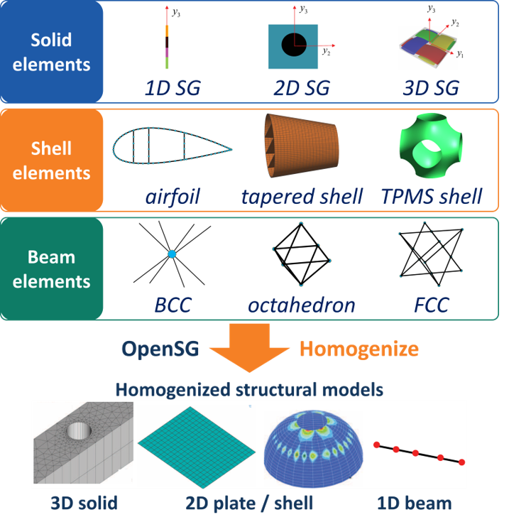

OpenSG#


OpenSG is a multiscale structural-analysis code based on the Mechanics of Structure Genome (MSG), developed by the Multiscale Structural Mechanics Group led by Prof. Wenbin Yu at Purdue University. From a Structure Gene (SG), the smallest building block of a structure, it computes the constitutive relations of solid, plate/shell and beam models (homogenization), and it recovers the local stress, strain and displacement fields from the structural response (dehomogenization).
An SG is a 1-D, 2-D or 3-D finite-element mesh. OpenSG has two engines that share one theory and one command:
engine |
SG |
produces |
|---|---|---|
|
1-D, 2-D or 3-D SG of solid elements |
plate ABD (6x6) or Reissner-Mindlin (8x8), Timoshenko beam 6x6, equivalent 3-D solid 6x6 |
|
1-D shell SG (cross-section contour), 3-D shell SG (surface) |
Timoshenko beam 6x6, equivalent 3-D solid 6x6 |
Both run on JAX, on the CPU or on a GPU.
The Tutorials section holds the OpenSG command-line tutorial. The CompositesAI section holds tutorials that run OpenSG through CompositesAI from real conversations, one chat each, grouped by OpenSG engine (msg-solid, msg-shell) and model (beam, plate, solid). Use the navigation bar at the top or the table of contents below to jump to a section.
Documentation#
The reference documentation of OpenSG has its own pages. The OpenSG 2.x documentation covers the current code. The OpenSG 1.0 documentation covers the earlier release.